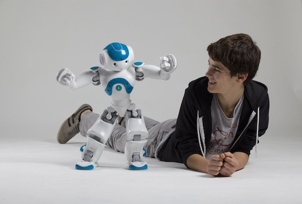
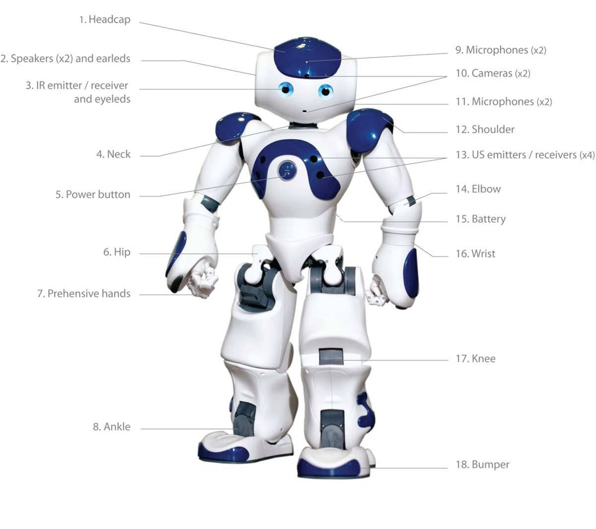
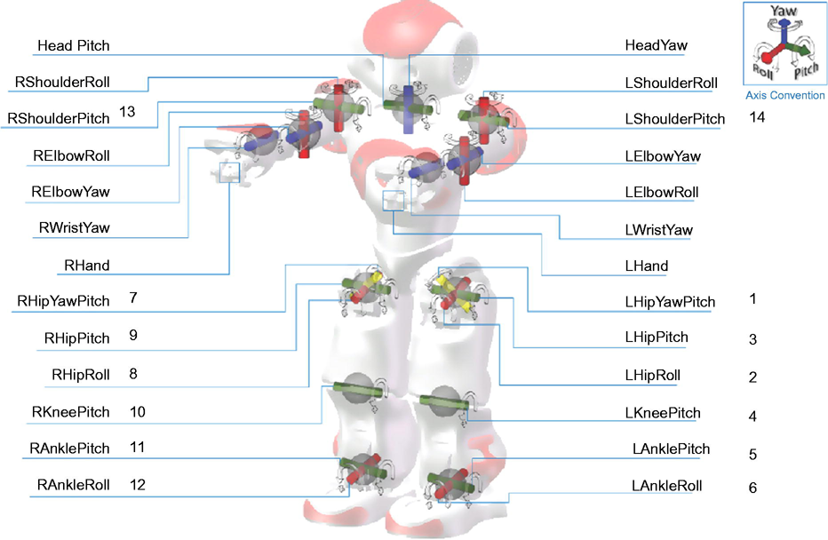

Nao Insansi Robot
Nao Insansi Robot Platformu V5 - Akademik Versiyon
Nao Insansi Robot Platformu V5 - Akademik Versiyon
NAO INSANSI ROBOT PLATFORMU V5
Nao, Paris Merkezli bir Fransiz sirketi olan Aldebaran Robotics tarafindan gelistirilmis olan programlanabilir,
orta ölçekli bir insansi robottur. Nao projesi 2004 yilinda baslatilmis ve 2007 yilinda Aldebaran Robotics tarafindan ilk
sürümü yapildiktan sonra 2011(Next Gen) ve 2014(Evolution) platform üzerinde 'upgrade'e gidilmis ve günümüzde en gelismis sürüm
olan NAO V.5 olusturulmustur. Bu üstün robot, robotsepeti.com kalitesiyle liselerde, üniversite laboratuvarlarinda hatta hastane
ve banka gibi kurumlarda dahi kullanilmak üzere robot gelistiricilerine sunulmustur. Dünyada da oldukça popüler olan NAO 70 farkli
ülkede 7000 adetten fazla satilmistir. Örnegin Ekim 2010'da Tokyo Üniversitesi, kendi "Nakamura Lab"inda asistan olarak gelistirilmek
umuduyla 30 adet NAO satin almistir. Ingiltere'de bir çok okulda kullanilan NAO, özellikle ototistik çocuklarin egitiminde çocuksu ifade
ve davranislariyla insan davranislarini iliskilendirmede normal insanlara göre daha ögretici oldugundan tercih edilmektedir. Yine 2015 yilinda
French Institute of Health and Medical Research tarafindan yürütülen bir çalismada yasli insanlara yardimci olabilmek adina robotik "otobiyografik
hafiza" testini NAO ile gerçeklestirmistir.

Insansi robotlarda en kompleks davranislardan biri insan tepkilerini
ölçüp buna uygun davranis gelistirebilmektir. Bu tarz davranislar NAO tarafindan
kolaylikla gerçeklestirilir. Robot insan etkilesiminde "sosyallik" olarak adlandirilan bu davranis örünütleri
NAO'un üstün donanimi ve kullaniciya büyük kolaylik saglayan yazilimi (Choregraphe) ile elde edilebilir. Iste NAO ile erisebileceginiz
bu tarz davranislara örnekler:
.Bir kinect sensör gibi el hareketleri ile insan varligini anlayabilme
.Yüz tanima
.Ses tanima
.Konusma seslerini diger seslerden ayirma
.Duruma özgü karar verme

NAO yu bir otomatondan ayiran ve insanlarla oyun oynama gibi kompleks davranislari otomatondan daha iyi gerçeklestirmesini
saglayan kompkes insan-robot etkilesimleri sergileyebilmesidir. Iste NAO ile eriseceginiz yaratici etkilesime geçebilme özelligidir.
NAO kisa adi STEM olan Fen, Teknoloji, Mühendislik ve Matematik ögretiminin her düzeyinde kullanilmaktadir.
Ögretmenler ve ögrenciler uygulamali bilimler ve robotik alanlarindaki ilerlemeleri NAO platformunu kullanarak takip edebilirler. Örnegin;
Ögrenciler için
.Bilgisayar bilimi, mekanik, elektronik ve kontrol teorisini birbirine baglayan uygulamalar gelistirme ve pratik yaparak ögrenme
.Objeleri kavrama, matris hesaplama veya NAO'nun çevreyle etkilesimi için yüz tanima gibi fonksiyonlari icra etmeye çalisirken
mühendislik kariyerine yön verme
.Joint projelerle takim çalismasi, proje yönetimi ve problem çözme yeteneklerini gelistirme
Ögretmenler için
.Robotik ve bilgisayar bilimi ögretimi temeline dayanan proje ve laboratuvarlar
.Ögrenme etkinligini arttirma
.Kiz ögrencilerin teknik ve mekanik konulara karsi ilgisini ve derse katilimini arttirma
gibi sonuçlara ulasilabilir.
YAZILIM ve DONANIM ÖZELLIKLERI
NAO V5 donanim olarak oldukça üstün özelliklere sahiptir. Bunun yaninda kullanicilar için robot programlamayi oldukça eglenceli kilan Chreographe yazilimina, 3D simülatöre (Webots) ve SDK'ya da sahiptir. Tüm bu araçlarin yaninda 12 ay boyunca NAO uygulamalarindan kendi sitesi üzerinden yapilan kayitla faydalaniabilir. Ayrica NAO 1 yil üretici garantisine de sahiptir.

NAO V5; 2 HD kameraya, 4 mikrofona, 2 hi-Fi hoparlöre, Wifi baglanti donanimina, 9 adet dokunma sensörüne,
8 basinç sensörüne, bir ses birlestiriciye, IR ve pozisyon sensörlerine, sonar donanimina ayrica gyro ve akselerometre sensörlerine de sahiptir.
NAO bataryalari tam dolu iken normal kullanimda 1.5 saat çalisabilir. NAO üzerinde bulunan pil lityum-iyon pildir ve 21.6V nominal gerilime sahiptir
ve bosaldiginda 3 saat içinde tekrar sarj edilebilir. Sensörler ve tüm çevresel birimler arasindaki islemler Intel Atom z530 islemci üzerinde ve Linux
NAOqi isletim sistemi üzerinde gerçeklesir. NAO üzerinde 25 DOF (degree of freedom) tanimlanmistir. Tüm bu hareket serbestisine eklem yerlerinde mevcut
olan firçali DC motorlarla ulasir.
Beliritilen DOF derecesine sakip NAO robotun tüm hareket eksenleri (25 adet) asagida gösterilmistir.

Belirtilen donanimlar ile NAO dogal etkilesim için 7 hisse sahip olmustur. 25 DOF ile tipki bir insan gibi hareket edebilir ve bulundugu çevreye uyum saglar. Ayrica gyro ve akselerometre sensörleri denge ve hiz ayarlamasi yapmasini saglar ve NAO'nun kolayca devrilmesinin önüne geçer. Hareket yeteneginde son versiyon ile gelinen nokta yazilim üzerinden vücut ve ekstremitelerin çarpismasini önlemek,
gelismis tork kontrol yöntemleri sentezlemek ve adaptif yürüme algoritmasi gelistirmek olmustur. NAO'nun agirlik merkezinde bir nedenle ciddi bir degisim olursa harekete dair tüm aktiviteler kesilir ve NAO tipki insan gibi çarpmaya karsi kendini koruyacak sekilde ekstremitelerini kullanir. Bas, el veayaklarindaki sensörleri ve sonari ile hissedebilir ve karsisindakinin davranislarini yorumlayabilir.
4 adet yönlü mikrofon ve hoparlör düzenegi ile isitir ve isitsel tepkiler üretir yani konusabilir. Dahasi konusacagi dil,19 farkli dil arasindan seçilebilir. 2 adet kamerasi (CMOS 640 x 480 - alin ve agiz seviyesinde) ile çevredeki objeleri görür. NAO'nun görmesi cisimleri basitçe görsel olarak algilamaktan ibaret olmayip ana karti üzerinde kayitli bir dizi algoritma ile yüz tanima ve saklanan nesneleri bulmayida kolayca yapabilir.
NAO wiFi ile internete baglanabilir ve bilgi edinebilir ve sorulari bilinçli olarak cevaplayabilir.
Tam olarak yapay zekaya sahip olmasada düsünebilir. Ve tüm bu özellikler Chroegraphe ile uyarlanarak robotunuz kisisellestirilebilir.